Runners
Equipment
Guns, cargo, deck gear and fishing gear fitted to the ships.
Weapons
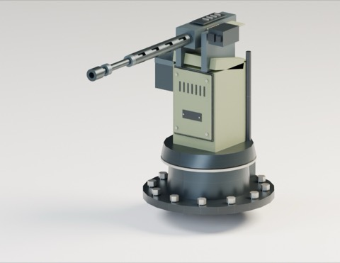
Single MGSmall weapon · E-01Approved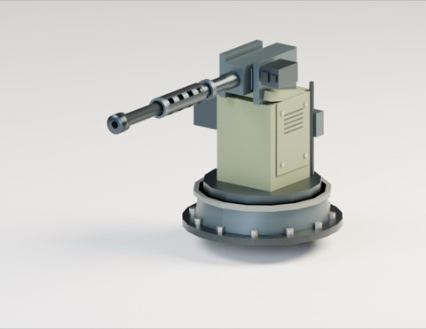
Heavy MGSmall weapon · E-02Approved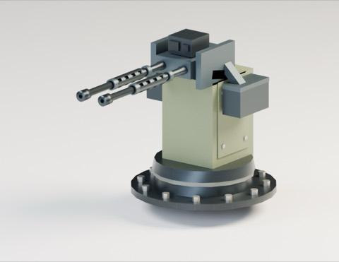
Twin heavy MGSmall weapon · E-03Approved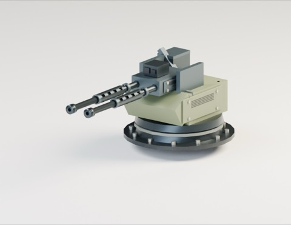
20 mm light cannonSmall weapon · E-04Approved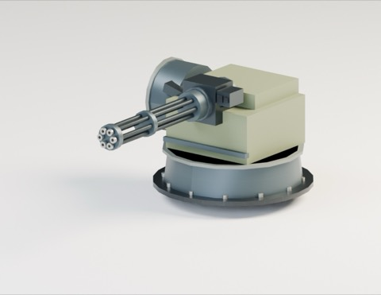
20 mm rotaryMedium weapon · E-05Approved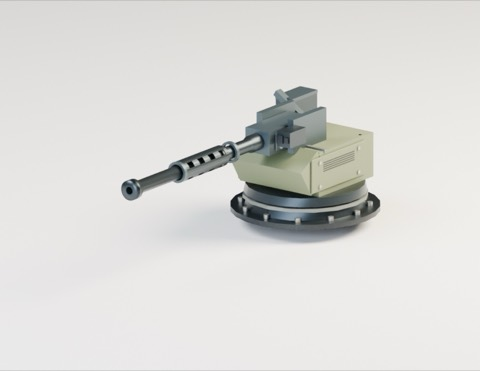
30 mm autocannonMedium weapon · E-06Approved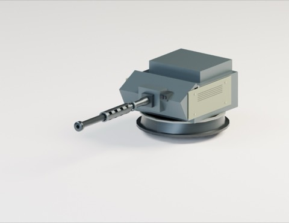
Single 40 mmMedium weapon · E-07Approved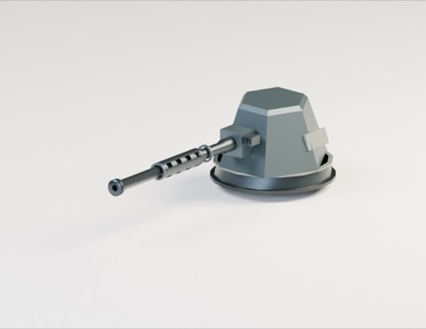
57 mm cannonMedium weapon · E-08Approved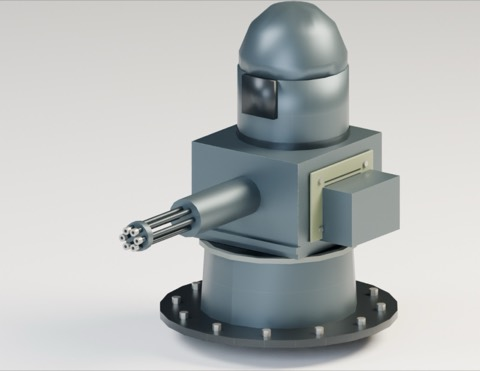
Tracking point defenceMedium weapon · E-09Approved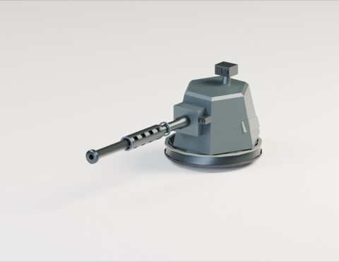
76 mm cannonLarge weapon · E-10Approved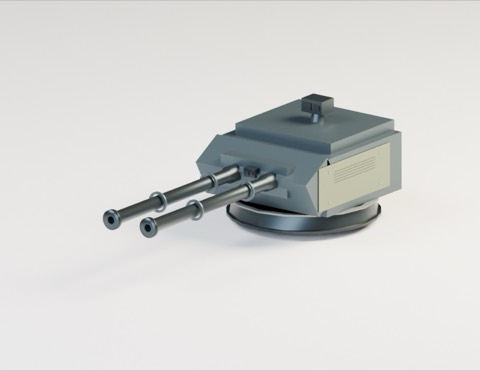
Heavy twin cannonLarge weapon · E-11Approved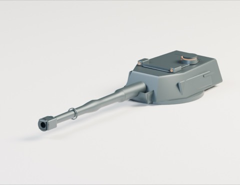
Destroyer main gunMain-gun barbette weapon · E-12Approved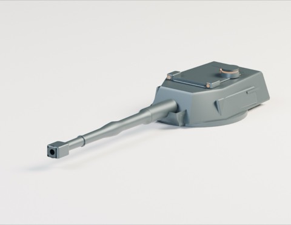
Cruiser main gunMain-gun barbette weapon · E-13Approved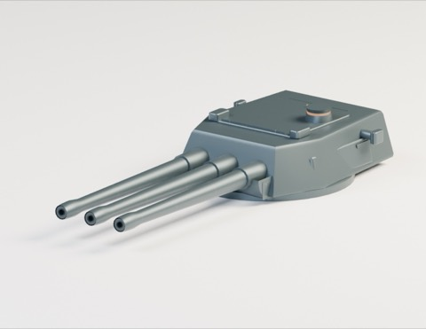
Triple main gunMain-gun barbette weapon · E-14Approved- Missile, two sizesWeapons · new part · E-15In review
- TorpedoWeapons · new part · E-16In review
- MineWeapons · new part · E-17In review
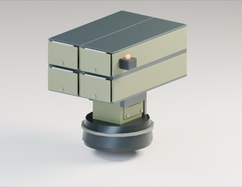
Missile boxMedium weapon · E-18Approved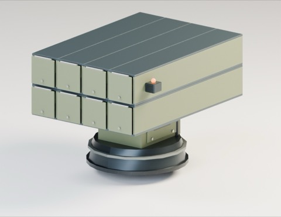
Missile launcherLarge weapon · E-19Approved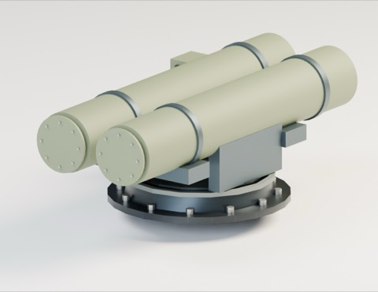
Twin torpedo tubesMedium weapon · E-20Approved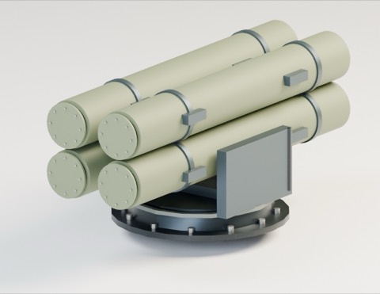
Quad torpedo tubesLarge weapon · E-21Approved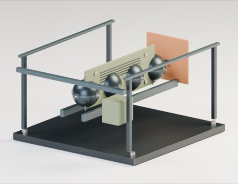
Mine rackWeapons · E-22Approved
Cargo
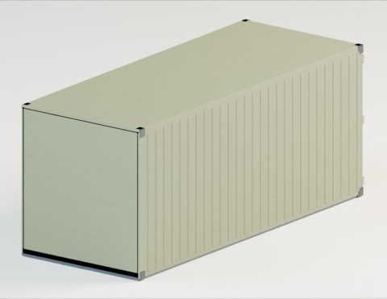
20 ft cargo container, five paintsCargo · E-23Approved- Supply container with working doorsCargo · E-24In review
- Supply container, 10 ft, with doorsCargo · E-25In review
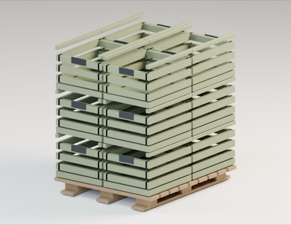
Pallets, all eight loadsCargo · E-26Approved- Floating loot palletCargo · new part · E-27In review
- Scrap baleCargo · E-28In review
- Scrap bin, 20 ft, with heap and press platesCargo · E-29In review
- Scrap bin, shortCargo · E-30In review
- Fish boxes, a hold-fullCargo · E-31In review
Deck gear
- Deck crane and magnet, 6.5 m boom: the patternDeck gear · E-32In review
- Deck cranes, 10 m, 15 m and 18 m boomsDeck gear · E-33In review
- Lifting magnetDeck gear · E-34In review
- Tow winch drumDeck gear · E-35In review
- Press hatchDeck gear · E-36In review
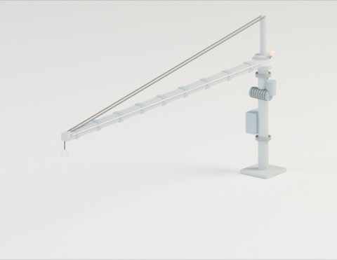
Loot net boom, both sidesDeck gear · E-37Approved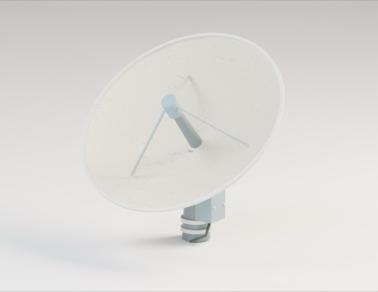
Navigation dishDeck gear · E-38Approved
Fishing gear
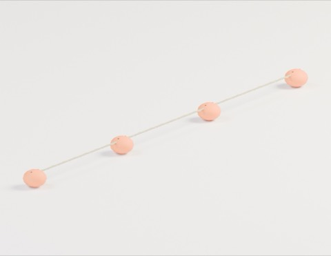
Net float and float lineFishing gear · E-39Approved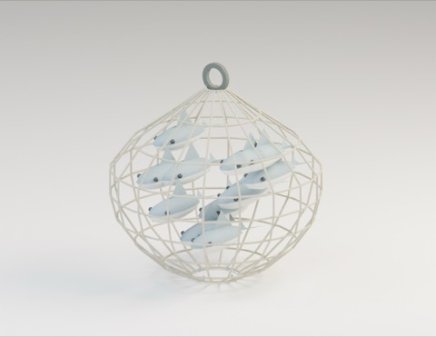
Net bagFishing gear · E-40Approved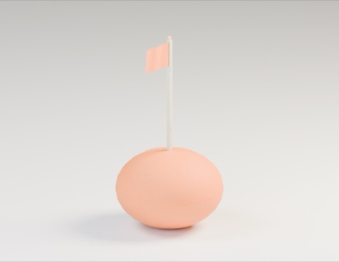
Crab pot buoyFishing gear · E-41Approved- Cast net on the waterFishing gear · E-42In review
- Cast net davitFishing gear · E-43In review
- Net binFishing gear · E-44In review
- Stern gantryFishing gear · E-45In review
- Net drumFishing gear · E-46In review
- Trawl doorFishing gear · E-47In review
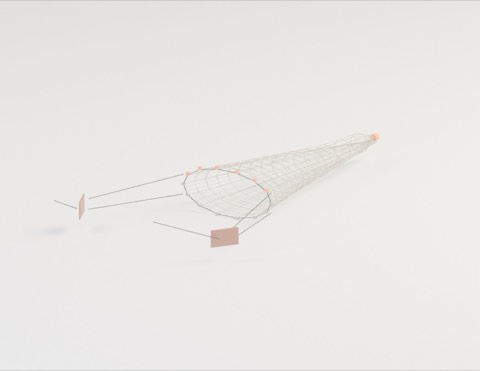
Trawl net, as it towsFishing gear · E-48Approved- Seine power blockFishing gear · E-49In review
- Seine net pileFishing gear · E-50In review
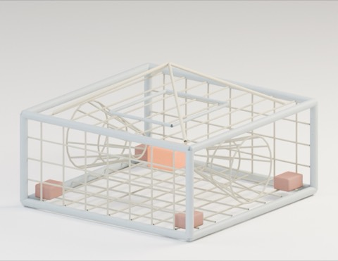
Crab pot, and stacks of 4 and 6Fishing gear · E-51Approved- Pot haulerFishing gear · E-52In review